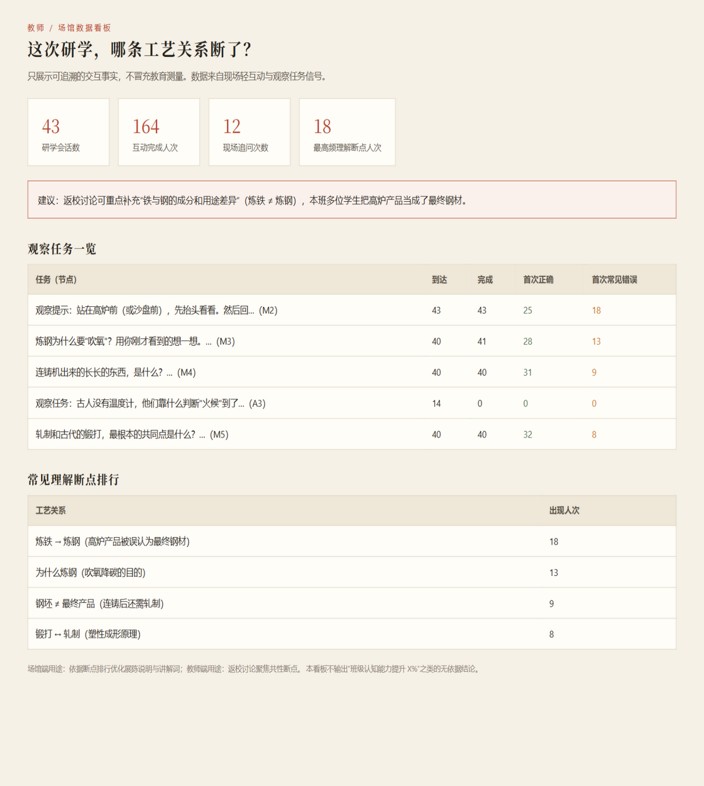

《开物脉络》· 用户旅程与服务设计 · A3-03
从“看见钢厂”，到“看懂钢铁”
现场优先 · 屏幕退后
固定安全物理路线
认知内容动态适配
认知内容动态适配
入
进入研学
一块铁，近四百年
标
选择目标
轻松看 / 想看懂 / 学校研学
问
造物问题
古今可交互对照
观
观察提示
先抬头看真实设备
检
轻互动
给系统信号，不是考试
断
发现断点
哪条工艺关系没连上
补
精准补充
为现在补一环
续
继续参观
回到真实现场
谱
开物谱
真实信号，不造假数字

① 观察点：屏幕只给一句提示
用户答“高炉出来的就是钢材”→ 系统发现的不是“他喜欢大机器”，
而是“炼铁 → 炼钢”这条因果还没连上。于是优先补
《为什么高炉出来的还不是钢？》，而不是推送热门设备。

Group Mode：同一条路线，不同的认知层级
全班走同一条安全路线；系统只改变看什么重点、怎么解释、做什么任务。
初中：先知道 · 高中：核心原理 · 深度组：工艺史与产业分析。
结束不是数字纪念章，是“我的开物谱”
只用四个真实状态：未接触 / 已接触 / 已验证 / 出现过断点。
今日理解的关键变化：“炼出来”≠“已经成为可以直接使用的钢材”。
现场研学的前提是观察真实设备。轻互动只有一个目的：
给系统一个“当前解释是否需要继续”的信号——答错不是扣分，是补一环的开始。
服务闭环：教师与场馆拿到的是事实，不是形容词
看板回答一个问题：“这次研学，哪条工艺关系断了？”——
常见理解断点排行、各观察点首答正确/错误人数、自动生成的返校讨论建议。
数据全部来自真实交互信号，可逐条追溯。
场馆端用途：依据断点排行优化展陈说明与讲解词 · 教师端用途：返校讨论聚焦共性断点

教师端看板（示例数据）
依据：2026 年七部门工业旅游政策要求真实生产区域与参观区域隔离——因此物理路线固定，系统只做认知适配；
博物馆学习研究表明注意分裂与任务负担显著影响现场学习效果——因此“先观察、后轻互动”。
界面为真实运行系统截图（教师端数据为示例数据）。
《开物脉络》——面向工业研学的古今工艺认知导航系统 · 参赛方向：数字智能
A3-03 / 5